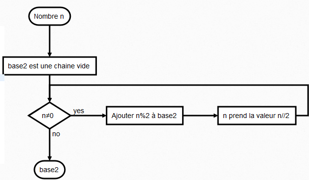

Binaire et représentation des entiers
L'information binaire
Le bit
L'histoire de l'informatique est intrinsèquement dépendante de l'histoire de la maîtrise de l'électricité. Fondamentalement, tout ordinateur est construit à partir de circuits électroniques qui:
- soit ne laissent pas passer le courant électrique (Off);
- soit laissent passer le courant électrique (In).
Exemple
Un circuit contenant un unique interrupteur admet donc deux états, il est binaire dans ce sens.
Définition : bit
Un bit est l'unité élémentaire d'information pouvant prendre deux valeurs distinctes, notées 0 et 1 (binaire). Le mot « bit » vient de l'anglais « Binary Digit », soit littéralement chiffre binaire.
La notation internationale pour le bit est \(b\). On parlera alors de \(kb\), \(Mb\), \(Gb\).
Grouper les bits
Une information binaire est donc une suite de \(0\) et de \(1\). Cette information peut-être de différente nature, tout dépend de la norme d'encodage utilisée. En soit, la même suite binaire peut signifier des choses totalement différentes comme :
- un nombre entier ;
- un nombre flottant ;
- un caractère ;
- une note de musique ;
- ...
Exemple
L'écriture binaire \(101010\) signifie :
- \(42\) dans les nombres entiers non signés (c'est-à-dire positifs) ;
>>> int('101010',2) 42 - Le caractère * en UTF-8 :
>>> chr(int('101010',2)) '*'
Bits et quantités d'informations
Avec un unique bit, on ne peux stocker que deux informations (deux nombres, deux caractères, deux notes de musiques,...). La quantité d'information différentes pouvant être représentées dépend donc du nombre de bits utilisés :
Done
On peux représenter \(2 \times 2 = 2^2 = 4\) informations différentes.
Done
On peux représenter \(2 \times 2 \times 2= 2^3 = 8\) informations différentes.
Done
On peux représenter \(2 \times 2 \times 2 \times 2= 2^4 = 16\) informations différentes.
Avec un système à \(n\) bits, on peut représenter \(2^n\) informations différentes.
Octets
Octets
Pour quantifier les informations binaires, on utilise souvent le mot octet ( abusivement appelé aussi byte dans le monde anglo-saxon).
Un octet est un groupement de \(8\) bits. Il permet de représenter \(2^8 = 256\) informations différentes.
La notation internationale pour l'octet est \(o\). On parlera alors de \(ko\) ( \(1~ko = 1000 o\) ), \(Mo\) ( \(1~Mo = 10^3~ko = 10^6~o\) ), \(Go\) ( \(1~Go = 10^3~Mo = 10^9~o\) ), etc, mais aussi de \(ko/s\), \(Mo/s\), etc...
Remarque
Les préfixes kilo, Mega, Giga ..., sont bien ceux du système international, c'est-à-dire ceux pour \(10^3\), \(10^6\), \(10^9\)... On verra dans la partie suivante qu'ils sont parfois confondus avec les préfixes binaires ( kibi, Mibi, Gibi...)
Ecritures en d'autres bases
Les entiers en base décimale
Rappels : Base décimale
Un nombre entier écrit dans une base décimale ( base \(10\) ) vérifie les conditions suivantes :
- il est écrit avec les dix chiffres arabes : \(0,1,2,3,4,5,6,7,8,9\) ;
- chaque chiffre possède un poids, représentant une puissance de \(10\), le poids augmentant de la droite vers la gauche en partant d'un exposant \(0\).
Exercice
- \(14~763 = 1 \times 10^{\dots} + 4 \times 10^{\dots} + 7 \times 10^{\dots}+ 6\times 10^{\dots} + 3\times 10^{\dots}\)
- \(100~042 = 1 \times 10^{\dots} + 4 \times 10^{\dots} + 2 \times 10^{\dots}\)
- \(14~763 = 1 \times 10^{4} + 4 \times 10^{3} + 7 \times 10^{2}+ 6\times 10^{1} + 3\times 10^{0}\)
- \(100~042 = 1 \times 10^{\dots} + 4 \times 10^{\dots} + 2 \times 10^{\dots}\)
La base 2 (système binaire)
Système binaire
Un nombre entier écrit dans le système binaire vérifie les conditions suivantes :
- il est écrit avec les deux chiffres : \(0\) et \(1\).
- chaque chiffre possède un poids représentant une puissance de \(2\), le poids augmentant de la droite vers la gauche en partant d'un exposant \(0\).
Remarques et notations
L'écriture \(101\) possède aussi bien un sens en binaire (un-zéro-un) qu'en décimal ( cent-un ). Pour lever l'ambiguïté , on écrira :
- \((101)_{10}\) ou simplement \(101\) pour le nombre en base \(10\) ;
- \((101)_2\) pour le nombre en base \(2\).
Exercice
Considérons le nombre \((101010)_2\). Convertissez ce nombre binaire en décimal :
Exercice : Conversions de la base \(2\) vers la base \(10\)
Ecrire les nombres suivants en base \(10\) :
- \((101)_2\)
- \((11111111)_2\)
- \((10010011)_2\)
A venir !
Exercice : Un peu de Python
Compléter la fonction suivante, sans utiliser int(x,2), afin qu'elle renvoie en base 10 le nombre \(x\) passé en argument en base \(2\), sous la forme d'une chaine de caractères. Vous pouvez cependant utiliser la fonction built-in int afin de convertir une chaine de caratère en un entier.
def bin2dec(x) :
"""fonction convertissant le nombre (x)_2 en base 10
>>> bin2dec('0')
0
>>> bin2dec('1')
1
>>> bin2dec('11')
3
>>> bin2dec('1000')
8
>>> bin2dec('11111111')
255
"""
Conversions de la base \(10\) vers la base \(2\)
Méthode : Algorithme de conversion du nombre \((n)_{10}\) en base \(2\)
fonction dec2bin(n) :
base2 <- chaine de caractère vide
Tant que n!=0 :
base2 <- base2+caractere(n%2)
n <- n//2
Renvoyer base2 inversée

Exemple : Conversion de \((135)_{10}\) en base \(2\)
A venir !
Conversions manuelles
Convertir les nombres suivants en base \(2\) :
- \((26)_{10}\)
- \((104)_{10}\)
- \((256)_{10}\)
- \((42)_{10}\)
A venir !
Exercice : De l'algorithme au programme
Compléter la fonction suivante en Python, qui renvoie la chaine de caractères correspondant à l'écriture de \(n\) en base \(2\).
def dec2bin(n) :
"""fonction convertissant le nombre n en base 2,
et renvoyant la chaine de caractères correspondante
>>> dec2bin(0)
'0'
>>> dec2bin(1)
'1'
>>> dec2bin(3)
'11'
>>> dec2bin(8)
'1000'
>>> dec2bin(255)
'11111111'
"""
A venir !
Nombre de bits nécessaires
Soit \((x)_{10}\) un nombre écrit en base \(10\).
Si \(n\) est l'entier tel que \(2^{n-1} \leqslant x <2^n\), alors le nombre \(x\) nécessitera \(n\) bits pour être représenté en binaire.
Exercice : Nombre de bits nécessaires
Déterminer pour chacun des nombres ci-dessous le nombre de bits minimal qui seront nécessaire dans l'écriture binaire de ce nombre :
- \(12\)
- \(123\)
- \(999\)
- \(1927\)
A venir !
Une autre base utile : l'hexadécimal
Outre que la lecture des nombres en écriture binaire par un humain est très compliquée, il faut remarquer que, de par la construction de ces nombres, la quantité de symboles utilisés en base \(2\) est largement supérieur à celui utilisé en base \(10\) - \(3,2\) fois plus grand en moyenne sur les \(100~000\) premiers entiers.
Il peut donc être utile de trouver un compromis entre la base \(2\), utile pour l'ordinateur, et la base \(10\) , plus compréhensible par un être humain.
Ce compromis peut-être trouvé avec le système hexadécimal, c'est-à-dire un système de base 16.
Base hexadécimale
Un nombre entier écrit dans une base hexadécimale ( base \(16\) ) vérifie les conditions suivantes :
- il est écrit avec les seize chiffres hexadécimaux : \(0,1,2,3,4,5,6,7,8,9,A,B,C,D,E,F\) ;
- chaque chiffre possède un poids représentant une puissance de \(16\), le poids augmentant de la droite vers la gauche en partant d'un exposant \(0\).
Exemple
Le nombre hexadécimal \((5B6)_{16}\) correspond donc en décimal à :
Exercice
Convertir de l'hexadécimal vers le décimal :
- \((FF)_{16}\)
- \((6E)_{16}\)
- \((245A)_{16}\)
Méthode : Convertir vers l'hexadécimal depuis le décimal
Pour convertir vers l'hexadécimal depuis le décimal, on utilise la même méthode qu'en binaire mais en divisant par \(16\).
Exemple
Convertir le nombre \(244\) en hexadécimal.
A venir !
Remarques
- A un chiffre dans la base \(16\), correspond exactement \(4\) chiffres dans la base \(2\).
- Cela signifie que pour écrire un octet en hexadécimal, deux chiffres hexadécimaux suffisent. C'est pour cette raison que les octets écrits en base deux sont groupés par 4 chiffres :
- Ce système de notation est très pratique pour noter les codes des couleurs (par exemple en RGB :
#7455BAsignifie que l'octet représentant le canal rouge a pour valeur74, celui du canal vert55, et celui du canal bleuBA), pour les clés de chiffrement (code Wifi par exemple), ...
Roue numérique
0 0 0
0 0 0 0 0 0 0 0
0 0
Accès au fichier de base : ici
Opérations élémentaires sur les nombres binaires
Sommes de nombres binaires
Méthode : Additionner deux nombres entiers en base 2
La technique d'addition de deux nombres binaire est la même que pour des nombres en écriture décimale :
Produits de nombres binaires
Méthode : Multiplier deux nombres entiers en base 2
La technique de multiplication de deux nombres binaire est la même que pour des nombres en écriture décimale - mais la retenue peut se propager parfois plus loin que le rang immédiatement supérieur :